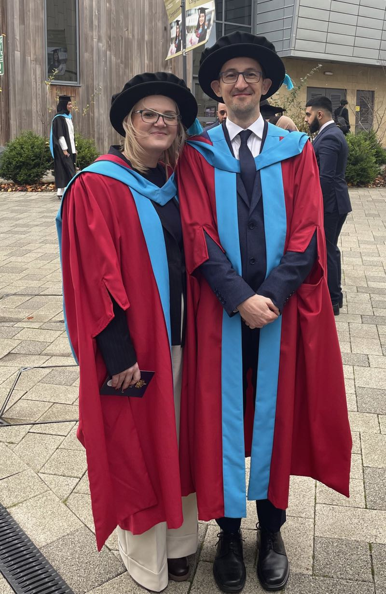
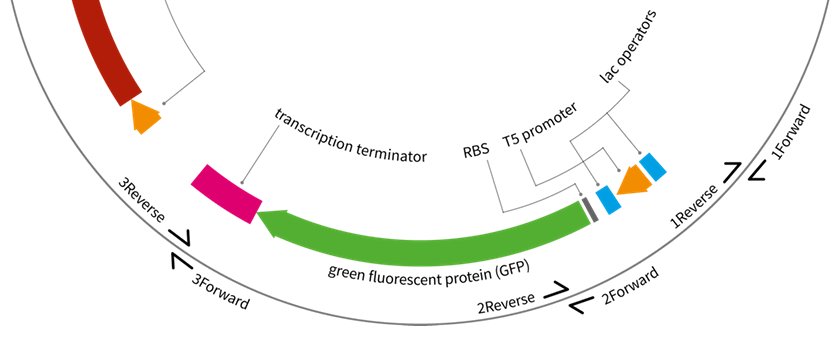
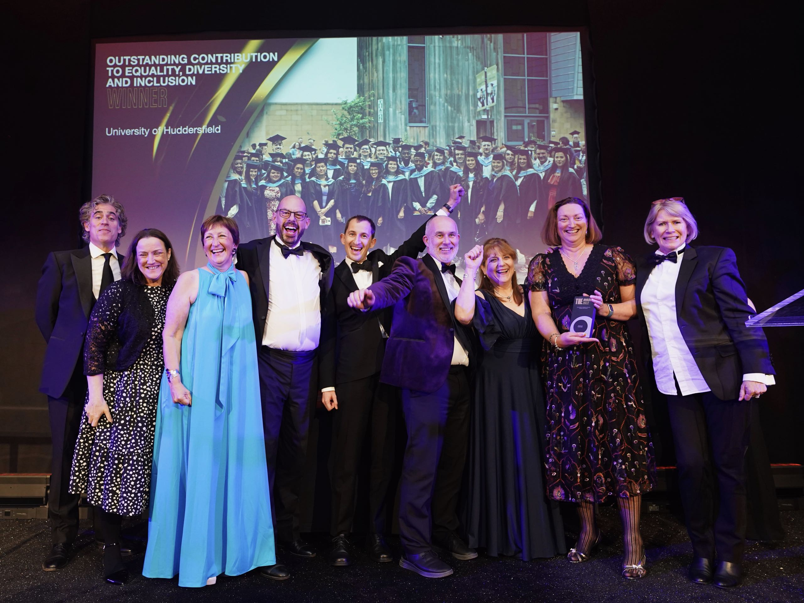
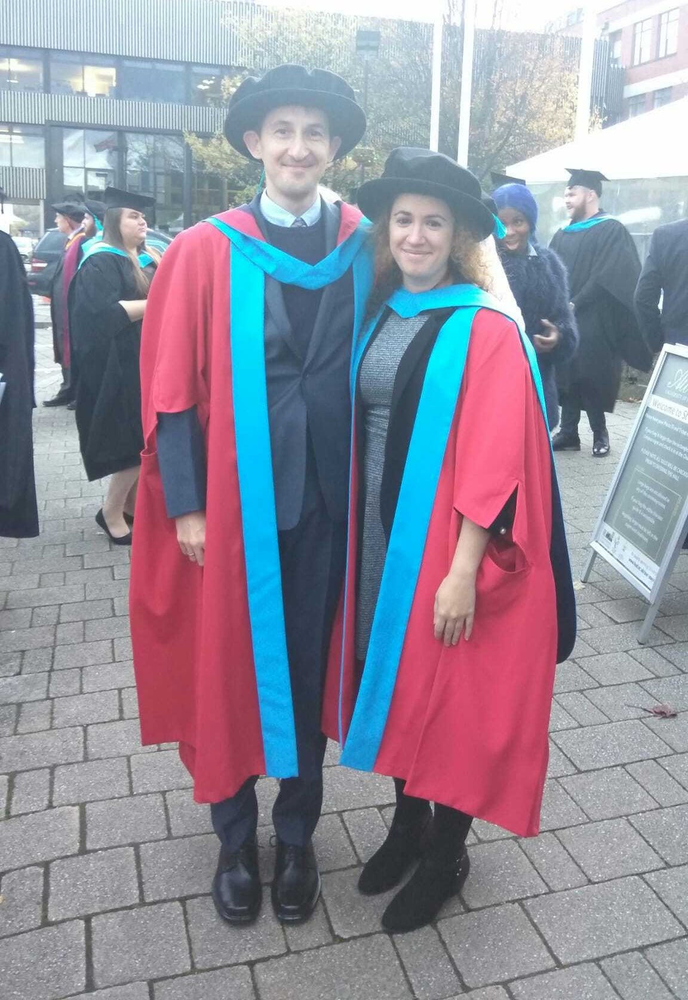
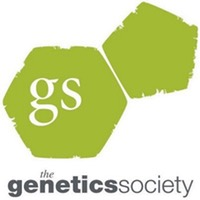
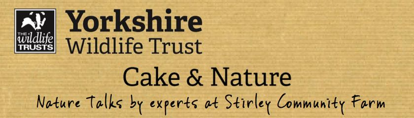
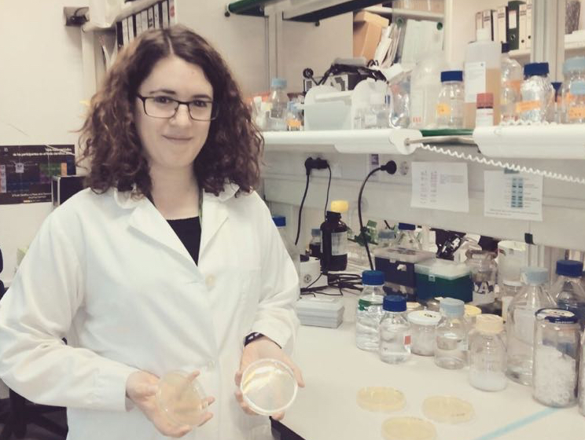

BrykLab
About
Teaching
Research
STLT
UNIGEMS
Resources
Categories
All
(20)

Congratulations, Dr Toni Brooks
Toni is now a doctor!
Toni, like Rohan before her, has actually been a doctor for a good while now, but only now we were able to put a hat on it. It is my great pleasure to congratulate Toni on…
Nov 11, 2025
Jarek Bryk, Jarek
NorthernBUG 14 in Huddersfield
Nothern Bioinformatics User Group meeting #14 in Huddersfield
Last week, on Friday 28th March 2025, the 14th edition of the Northern Bioinformatics User Group took place at the University of Huddersfield. For the first time, the…
Apr 3, 2025
Jarek Bryk
A new website - again!
What could possibly go wrong?
Finally! After a long while I have updated this website to Quarto, rearranged some sections to highlight my work at STLT plus UNIGEMS and other resources, and moved over all…
Mar 18, 2025
Jarek Bryk
TASO Institutional Data Use Project
Outcomes from the TASO project we participated in
For the last year, STLT has taken part in the Institutional Data Use project run by the Transforming Access and Student Outcomes in Higher Education (TASO) The project aims…
Oct 30, 2024
Jarek Bryk

UNIGEMS paper is published
Open access, and with extra resources, too.
This paper was a long time coming and I am very glad it is finally, officially out (although the resources it describes have been stealthily popular for some time already).…
Oct 2, 2023
Jarek Bryk

We have won!
STLT team gets an award from THE
The Strategic Teaching and Learning Team, where I have worked on the HuDAP - Huddersfield Differential Attainment Project (see the research page, has been awarded the Times…
Jan 7, 2023
Jarek Bryk
Congratulations, Dr Rohan Raval!
Rohan is now a Doctor!
Finally! Rohan has actually been a doctor for a good while now, but only now we were able to put a hat on it. It is my great pleasure to congratulate him on successful…
Jul 18, 2022
Jarek Bryk
Chimeras paper is published
PhD-students-driven paper is published in Molecular Ecology Resources. Read it to learn more about chimeras in RAD-seq.
The wealth of genotyping that we have done in the last 5 years (and by “we”, I mean Marisa and Rohan), coupled with the upgraded quaddRAD genotyping protocol, enabled us to…
Jul 6, 2022
Jarek Bryk
UNIGEMS preprint is live!
UNIGEMS project finally sees the official announcement. If you teach with plasmids and bacteria, you may find it useful.
Just what is says on the tin - we have finally put our UNIGEMS paper on biorxiv: UNIGEMS: plasmids and parts to facilitate teaching on assembly, gene expression control and…
Jun 23, 2021
Jarek Bryk
A new website!
What could possibly go wrong?
Testing… testing… one two three… Please expect gremlins and other bugs in the next few weeks as I am updating the site and moving things over…
Feb 22, 2021
Jarek Bryk
Next generation biologists cloud computing workshop
Out last workshop in the series.
We are happy to announce the next - and likely the last (!) - workshop in our “Next Generation Biologists” series. During
two days in January 16-17 (Thursday and Friday) at…
Dec 10, 2019
Jarek Bryk
Hello, Haeyam!
A new BrykLab lab member :-).
We are very happy to welcome Haeyam Taiy, a new member of the BrykLab, for her year-long research placement with our group. Haeyam is a current student at Huddersfield and…
Sep 16, 2019
Jarek Bryk

Congratulations, Dr Martin Cerezo!
Marisa is now a Doctor!
It is my great pleasure to congratulate Marisa on successful completion of her doctoral thesis “European phylogeography and genetic structure of wood and yellow-necked mice
A…
Nov 18, 2018
Jarek Bryk

Announcing Programming for Evolutionary Biology Conference
Buttermere, Lake District, 2-6 September, 2018.
UPDATE 20th July 2018
Thanks to generous funding from our supporting organisations, The Genetics Society and The Company of Biologists, we are able to keep the registration…
May 27, 2018
Jarek Bryk
Hello, Alex!
A new BrykLab lab member :-).
We are very happy to welcome the third member (!) of our merry band, Alexandra Siddall, who joins us from the
wrong
other side of the Pennines for her year-long research…
Oct 26, 2017
Jarek Bryk
Hello, Rohan!
A new BrykLab lab member :-).
We are very happy to welcome Rohan Raval, a new PhD student in Huddersfield, who came to Huddersfield from the depths of the Silwood Park in the faraway lands of somewhere…
Oct 25, 2017
Jarek Bryk
Fully-funded PhD position on comparative genomics of Apodemus
Genetics and genomics of metabolism in Apodemus flavicollis
The BrykLab has* a fully-funded PhD position available to continue and expand our work on
Apodemus
genomics, from phylogeography to genome-wide scans for positive selection.…
Mar 8, 2017
Jarek Bryk

My talk at Yorkshire Wildlife Trust
A Cake and Nature Talk.
I was recently invited by Kara Jackson from the Yorkshire Wildlife Trust (YWT) to give a talk on our research and/or evolutionary biology. I wasn’t aware of the YWT before…
Feb 4, 2017
Jarek Bryk

Hello, Marisa!
A new BrykLab lab member :-)
I am very happy to welcome Marisa Martín Cerezo, a new PhD student in Huddersfield, with whom I will be working on the
Apodemus
and
Mustela
projects. Marisa came to The…
Oct 9, 2015
Jarek Bryk
Hello, world!
First post!
Welcome to the website of a research group of Dr Jarek Bryk at the University of Huddersfield in the north of England.
Jul 14, 2015
Jarek Bryk
No matching items